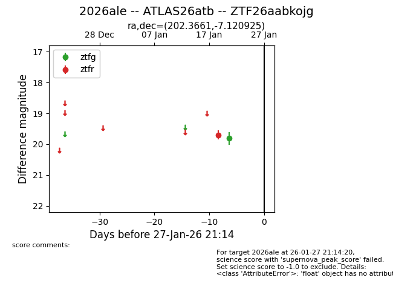
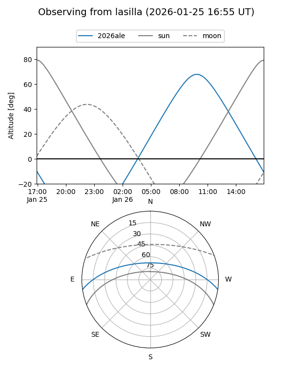

2026ale
Target 2026ale at 2026-01-22 17:06
Aliases and brokers:
FINK: link
Lasair: link
ALeRCE: link
TNS: link
YSE: link
alt names
ZTF26aabkojg (ztf,fink_ztf)
2026ale (tns,yse)
ATLAS26atb (atlas)
Coordinates:
equatorial (ra, dec) = 202.3661,-7.12092
equatorial (HMS+DMS) = 13:29:27.87,-07:07:15.33
galactic (l, b) = (319.3393,+54.53493)
Flags:
Photometry:
last ztfg=19.81, ztfr=19.70
1 ztfg, 1 ztfr detections
Lightcurve

Visibility


Additional plots